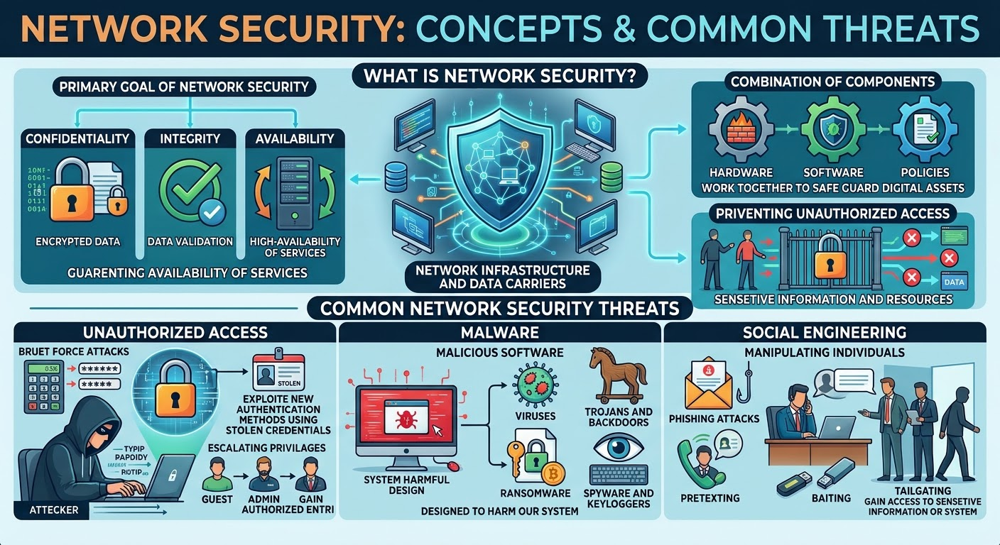
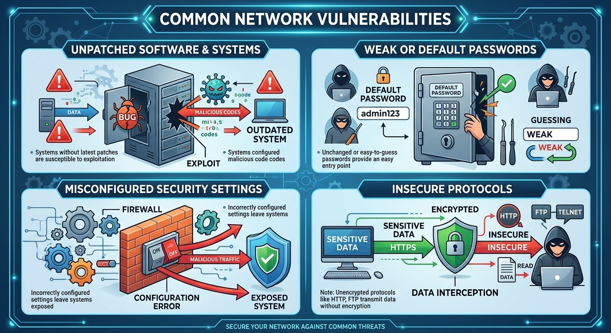
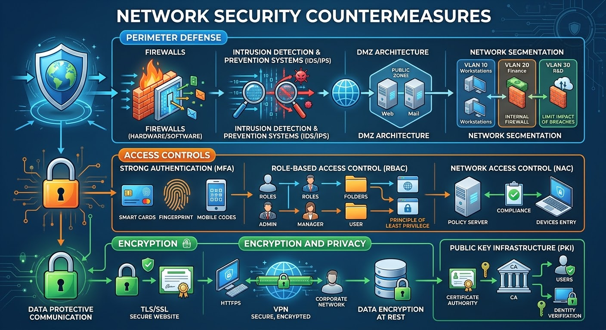

what is Network Security?
Network security involves the protection of our network infrastructure and data carries. This includes: preventing unauthorized access to sensitive information and resources.
The primary goal of Network security are maintaining confidentiality, ensuring data integrity, and guaranteeing availability of services.
It is a combination of hardware, software, and policies work together to safeguard our digital assets.
Common Network Security Threats
Unauthorized Access.
This involves actions such as:
Brute force attacks - where attackers try to enumerate passwords, exploit new authentication methods using stolen credentials, escalating privileges to gain authorized entry.
Malware.
This involves malicious software including: viruses, Trojans and backdoors, Ransomware, Spyware and keyloggers.
All are designed to harm our system.
Social Engineering.
This involves manipulating individuals through: Phishing attacks, Pretexting, Baiting, or Tailgating to gain access to sensitive information or system.
See Figure 01

Figure-01
Common Network Vulnerabilities
Key Vulnerability Categories.
Unpatched software and systems - systems that not have been updated with the latest security patches are susceptibls to exploitation.
Weak or default passwords - unchanged or easy to guess passwords provides an easy entry point for hackers.
Misconfigured security settings - incorrectly configured security settings leave systems exposed.
Insecure protocols - using protocols such as: HTTP, FTP or Telnet which transmit data without encryption can lead to data interception.
See Figure 02

Figure-02
Network Security Countermeasures
Perimeter Defense.
Firewalls(Hardware/Software)- Impliment firewall to control network traffic.
Intrusion Detection and prevention Systems - to identify and block malecious aactivities.
DMZ architecture - establish demiliterize zone to isolate public facing servers.
Network Segmentation - ensure network segmentation to limit the inpact of potential briches.
Access Controls.
It is very important for strong authentication methods including multi-factor authentication.
Role-based access control - employee role-based asscess control to manage user permissions and also apply principle of Least privilage.
Network Access Contol(NAC) - to control device access to the network.
Encryption and Privacy.
TLS/SSL - use transport layer security or secure sockets layer secure communication.
VPN - implement virtual private network for secure remote access.
Employe Data Encryption at rest and utilize Public key infrastructure (PKI) for certificate management.
See Figure 03

Figure-03